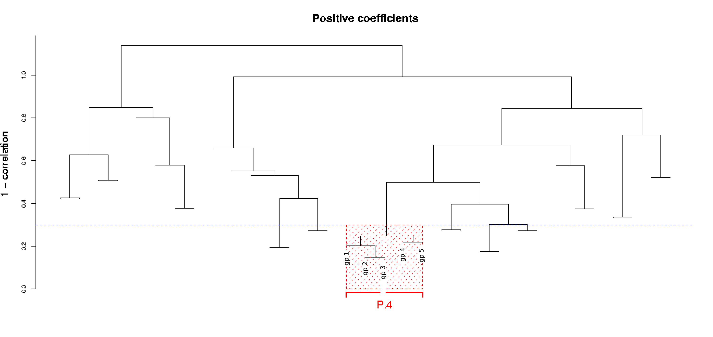

Please, DO NOT use the overfitt one, except for pedagogic purposes to show consequencues of overfitting and not doing cross-validation.
Please, DO NOT use the overfitt one, except for pedagogic purposes to show consequencues of overfitting and not doing cross-validation.
The validation data show that the fitted model has reasonable predictive performance. The p-values from the log-rank tests for the validation data are larger than those from the cross-validation runs; this is to be expected if, for example, the validation data are from a different country or hospital.
With both the validation and original data, comparing the survival curves for two and four groups seem to suggest that patients probably fall into two groups, with regards to this model, rather than four. This issue, however, is outside the scope of this tool.(The dendrograms should be shown as very large images. if your browser does not do it automatically, ask it to do it. To move around the figure, right-click on it (or whatever your browser requires) to view the figure in a separate tab or window, and scroll around at will.)
(help)Here is a cluster of the genes with positive coefficients that have a p-value less than the specified filter (0.01 in this case). Only one cluster of genes, called P.4 in this case, meets the cluster requirements regarding cluster size (in this case minimium and maximum size of 3 and 10, respectively), and minimum correlation (0.7). The dotted horizontal blue line, at 0.3 (1 - 0.7), shows that only a few other clusters meet the minimal correlation requirement, but none of those other that meet that requirement have more than 3 genes (although, in this case, there is a very borderline cluster, just right of P.4).
For the genes with negative coefficients and p-value < 0.01, there are two clusters, here called N.6 and N.2, that meet the requirements regarding size and minimum correlation.
Results (help)
Analyses using Filter, Cluster, and Stepwise model selection (as in Dave et al.) =================================================================================== ******************************************************************************** ******************************************************************************** ******************** ******************** ******************** Model fitted to all data ******************** ******************** ******************** ******************************************************************************** ******************************************************************************** Total of 1 signature components selected and 5 genes. Selected signature components, genes and coefficients Component_Name Genes Coefficient 1 ============== ================================================== =========== 2 N.6 -4.1276 3 gn.2 4 gn.4 5 gn.1 6 gn.3 7 gn.5 8 -------------- -------------------------------------------------- -----------
For the original data, after Cox model building and variable selection, only cluster N.6 is retained. Of course, the identity of the genes in cluster N.6 is the same as shown in the figure above.
The value of the coefficient, -4.13, is for a variable that is the average of the five genes gn.2, gn.4, gn.1, gn.3 and gn.5. This is a cluster from the genes with negative coefficients. Of course, the coefficient for the Cox model is negative (-4.13) and indicates that an increase in the value of this "cluster" (i.e., the average of those five genes) leads to an increase in survival.
In the final selected model, thus, clusters N.2 and P.4 are not used (though they were considered in the stepwise AIC-based variable selection).
********************************************************************************
********************************************************************************
******************** ********************
******************** Cross-validation runs ********************
******************** ********************
********************************************************************************
********************************************************************************
Out-of-bag scores
Out-of-bag scores
[,1]
113 1.114309941
2r6 0.370789174
967-0 -2.626813918
732 0.254714682
(...)
565-17 -1.397717406
2269 0.558264724
1494 0.064741253
180 0.663395373
Out of bag scores. These are the linear predictor scores, not the predicted survival time! (These values are obtained with a simple matrix multiplication of the coefficients times the covariates).
These are all "out-of-bag" predictions, meaning that the predictions for a subject are based upon a full model building (including gene selection, clustering, and Cox model selection) where that subject has not participated at all. Thus, no selection bias affects these scores. These are the scores used to construct the two survival plots (the non-overfitt ones).
Selected components, genes and coefficients in cross-validation runs ========================================================================
The next part of the results shows results from the complete model building carried out during the 10-fold cross-validation runs. In other words, with a subset of the data we adjust a Cox-model to each gene, filter by p-value, cluster the filtered genes, and do model selection with AIC on a multivariate Cox model.
Please, remember that the names of the clusters are not comparable among runs or with the complete data set!
CV run 1 ------------------------ Total of 1 signature components selected and 4 genes. Selected signature components, genes and coefficients Component_Name Genes Coefficient 1 ============== ================================================== =========== 2 P.4 3.1911 3 gp.4 4 gp.2 5 gp.1 6 gp.3 7 -------------- -------------------------------------------------- ----------- --------------------------------------------------------------------------------
In this first run, and in contrast to what happened with the complete data set, the final model selected uses only one cluster of genes with positive coefficients.
In this case, this cluster is called P.4, like the cluster with the complete data shown in the dendrogram above, and also this cluster is composed of many of the same genes as above. But this is partly chance: do not attach any meaning to the names of the clusters (and see the next CV run).
CV run 2 ------------------------ Total of 1 signature components selected and 5 genes. Selected signature components, genes and coefficients Component_Name Genes Coefficient 1 ============== ================================================== =========== 2 P.2 2.9981 3 gp.4 4 gp.2 5 gp.5 6 gp.1 7 gp.3 8 -------------- -------------------------------------------------- ----------- --------------------------------------------------------------------------------
In this CV run, again we select a cluster of genes with positive coefficients. Interestingly, many of the genes selected are the same as in CV run 1, but note that the name of the cluster is completely different. Note also that the coefficient is roughly similar (3.2 in CV run 1 and 3.0 in CV run 2), which makes a lot of sense given that both clusters are very similar (they share all genes except gp.5).
CV run 3 ------------------------ Total of 2 signature components selected and 7 genes. Selected signature components, genes and coefficients Component_Name Genes Coefficient 1 ============== ================================================== =========== 2 P.15 2.7346 3 gg.9 4 gg.10 5 gg.11 6 -------------- -------------------------------------------------- ----------- 7 N.2 -1.2633 8 gn.8 9 gn.2 10 gn.3 11 gn.5 12 -------------- -------------------------------------------------- ----------- --------------------------------------------------------------------------------
In this case, the final model includes a cluster with positive coefficient genes and a cluster with negative coefficient genes.
Interestingly, the positive coefficient genes are very different from those in CV runs 1, 2, (and 7, 8, 9, below). The cluster of genes with negative coefficients shares many genes with the set of genes selected from the complete original data, but the coefficient is smaller in absolute value (more on this later).
CV run 4 ------------------------ Total of 1 signature components selected and 3 genes. Selected signature components, genes and coefficients Component_Name Genes Coefficient 1 ============== ================================================== =========== 2 N.5 -4.2551 3 gn.4 4 gn.3 5 gn.5 6 -------------- -------------------------------------------------- ----------- --------------------------------------------------------------------------------
A set of genes very similar to that from the original data, and a coefficient that is roughly similar (-4.2 here, -4.1 with the original data). Again, this is telling us that the association of survival with these set of genes is stable in the different CV runs.
Notice, however, that the actual identity of the genes differs slightly: gn.1 and gn.2 are not in this selected cluster. Is this biologically relevant? Based on the results from the overall data (see the dendrogram above) gn.1 and gn.2 seem to show tight coexpression with the other three. Then, in this CV run it is likely that these genes where just above the 0.7 minimal correlation threshold and, thus excluded from the final threshold. This is likely, based also on the results on the other CV runs.
It is important to notice, though, that so far the first 4 CV runs have shown that there is ample room for instability in the procedure: the clustering procedure can lead to different outcomes in slightly different data sets (a well known phenomemon in clustering), and the actual clusters selected with stepwise selection can be quite different (a well known phenomenon in statistics regarding the instability of variable selection procedures).
CV run 5 ------------------------ Total of 1 signature components selected and 4 genes. Selected signature components, genes and coefficients Component_Name Genes Coefficient 1 ============== ================================================== =========== 2 N.6 -5.2064 3 gn.4 4 gn.1 5 gn.3 6 gn.5 7 -------------- -------------------------------------------------- ----------- -------------------------------------------------------------------------------- CV run 6 ------------------------ Total of 1 signature components selected and 3 genes. Selected signature components, genes and coefficients Component_Name Genes Coefficient 1 ============== ================================================== =========== 2 N.5 -2.8382 3 gn.2 4 gn.4 5 gn.3 6 -------------- -------------------------------------------------- ----------- -------------------------------------------------------------------------------- CV run 7 ------------------------ Total of 1 signature components selected and 3 genes. Selected signature components, genes and coefficients Component_Name Genes Coefficient 1 ============== ================================================== =========== 2 P.9 3.5556 3 gg.12 4 gg.13 5 gg.14 6 -------------- -------------------------------------------------- ----------- -------------------------------------------------------------------------------- CV run 8 ------------------------ Total of 1 signature components selected and 4 genes. Selected signature components, genes and coefficients Component_Name Genes Coefficient 1 ============== ================================================== =========== 2 P.5 2.7369 3 gp.4 4 gp.2 5 gp.1 6 gp.3 7 -------------- -------------------------------------------------- ----------- --------------------------------------------------------------------------------
CV runs 7 and 8 both return one single cluster of positive coefficient genes. The cluster for CV run 8 is very similar with those from CV runs 1 and 2 and the coefficients are also roughly similar.
CV run 9 ------------------------ Total of 2 signature components selected and 8 genes. Selected signature components, genes and coefficients Component_Name Genes Coefficient 1 ============== ================================================== =========== 2 P.7 1.964 3 gg.12 4 gg.13 5 gg.15 6 gg.14 7 -------------- -------------------------------------------------- ----------- 8 N.7 -3.0649 9 gn.2 10 gn.4 11 gn.1 12 gn.3 13 -------------- -------------------------------------------------- ----------- --------------------------------------------------------------------------------
One positive and one negative genes clusters selected. Notice that P.7 is somewhat similar to cluster selected in CV run 7. Note also that these two positive clusters (CV run 9 and CV run 7) and those from CV runs 1, 2, 8, share no common genes. This suggests checking if these genes are in similar pathways, or are playing complementary roles.
Now, the cluster of genes with negative coefficients is very similar to that from the complete data set and those obtained in CV runs 7 and 10.
Notice, however, that the absolute values of the coefficients for P.7 is much smaller than the absolute value of the coefficient for the positive cluster in CV run 7 (even when the identity of the genes is very much the same). Similarly with coefficient of N.7 relative to the coefficient from N.6 cluster in the original data or the N.5 component in CV run 10, again even if the genes in these three cases are basically the same ones.
This decrease in the absolute value of the coefficients is often the result of a correlation among the covariates. In this case this means that the effect seen here can be associated with a correlation between the two sets of clusters or, in other words, among the genes between the clusters (of course, we expect there to be a negative correlation between any of the genes in the positive coefficient clusters and any of the genes in the negative coefficient clusters).
CV run 10
------------------------
Total of 1 signature components selected and 5 genes.
Selected signature components, genes and coefficients
Component_Name Genes Coefficient
1 ============== ================================================== ===========
2 N.5 -5.5652
3 gn.2
4 gn.4
5 gn.1
6 gn.3
7 gn.5
8 -------------- -------------------------------------------------- -----------
--------------------------------------------------------------------------------
Number of shared genes
OriginalSample CV.run.1 CV.run.2 CV.run.3 CV.run.4 CV.run.5 CV.run.6 CV.run.7 CV.run.8 CV.run.9 CV.run.10
OriginalSample (5) 5 0 0 3 3 4 3 0 0 4 5
CV.run.1 (4) 0 4 4 0 0 0 0 0 4 0 0
CV.run.2 (5) 0 4 5 0 0 0 0 0 4 0 0
CV.run.3 (7) 3 0 0 7 2 2 2 0 0 2 3
CV.run.4 (3) 3 0 0 2 3 3 2 0 0 2 3
CV.run.5 (4) 4 0 0 2 3 4 2 0 0 3 4
CV.run.6 (3) 3 0 0 2 2 2 3 0 0 3 3
CV.run.7 (3) 0 0 0 0 0 0 0 3 0 3 0
CV.run.8 (4) 0 4 4 0 0 0 0 0 4 0 0
CV.run.9 (8) 4 0 0 2 2 3 3 3 0 8 4
CV.run.10 (5) 5 0 0 3 3 4 3 0 0 4 5
Proportion of shared genes (relative to row total)
OriginalSample CV.run.1 CV.run.2 CV.run.3 CV.run.4 CV.run.5 CV.run.6 CV.run.7 CV.run.8 CV.run.9 CV.run.10
OriginalSample (5) 1.000 0.000 0.000 0.600 0.600 0.800 0.600 0.000 0.000 0.800 1.000
CV.run.1 (4) 0.000 1.000 1.000 0.000 0.000 0.000 0.000 0.000 1.000 0.000 0.000
CV.run.2 (5) 0.000 0.800 1.000 0.000 0.000 0.000 0.000 0.000 0.800 0.000 0.000
CV.run.3 (7) 0.429 0.000 0.000 1.000 0.286 0.286 0.286 0.000 0.000 0.286 0.429
CV.run.4 (3) 1.000 0.000 0.000 0.667 1.000 1.000 0.667 0.000 0.000 0.667 1.000
CV.run.5 (4) 1.000 0.000 0.000 0.500 0.750 1.000 0.500 0.000 0.000 0.750 1.000
CV.run.6 (3) 1.000 0.000 0.000 0.667 0.667 0.667 1.000 0.000 0.000 1.000 1.000
CV.run.7 (3) 0.000 0.000 0.000 0.000 0.000 0.000 0.000 1.000 0.000 1.000 0.000
CV.run.8 (4) 0.000 1.000 1.000 0.000 0.000 0.000 0.000 0.000 1.000 0.000 0.000
CV.run.9 (8) 0.500 0.000 0.000 0.250 0.250 0.375 0.375 0.375 0.000 1.000 0.500
CV.run.10 (5) 1.000 0.000 0.000 0.600 0.600 0.800 0.600 0.000 0.000 0.800 1.000
As we should expect, there are no genes shared between runs that select only positive coefficient genes and runs that select negative coefficient genes, for instance between CV run 1 and CV run 10.
CV run 2 shares none of the positive coefficient genes with any of the other runs with positive coefficients, but some genes with runs where genes with negative coefficients are returned.
An interesting question is why we seem to be able to obtain essentially disjoint models. In some models only genes with positive coefficients are chosen and in some others only genes with negative coefficients are selected. Are these sets interchangeable in terms of predictive ability? Are the positive and negative sets correlated? When we consider only the negative or the positive, the stability of the selected genes seems reasonably satisfactory, but it is worth asking why we seem to be able to either use genes with negative or genes with positive coefficients.
To further explore these questions of stability, it is probably a good idea to re-run the process a few more times, and compare the results from the CV runs.
Gene freqs. in cross-validated runs of genes selected in model with all data
gn.3 gn.4 gn.2 gn.5 gn.1
6 5 4 4 3
Notice that there were 6 CV runs where at least one negative coefficient cluster was selected. That means that gn.3 has shown up in all such models and gn.4 in 5 out of 6, etc.
Gene frequencies in cross-validated runs
gn.3 gn.4 gn.2 gn.5 gp.4 gp.2 gn.1 gp.1 gp.3 gg.12
6 5 4 4 3 3 3 3 3 2
gg.13 gg.14 gn.8 gg.9 gg.10 gg.11 gg.15 gp.5
2 2 1 1 1 1 1 1
********************************************************************************
********************************************************************************
******************** ********************
******************** Validation data ********************
******************** ********************
********************************************************************************
********************************************************************************
Scores (linear predictor) for validation data
[,1]
1 -0.774357643
2 -0.190712715
3 -0.125496379
4 -0.845352641
5 -0.203095563
(...)
36 -0.304634922
37 -0.444973872
38 -0.154389693
39 -0.408650849
40 0.960066676
These are, again, the linear predictors, not predictions of survival. Of course, none of these cases/subjects have been involved in any model fitting. These data are used to construct the survival curves for the validation data, shown at the beginning.